3.1 Physical Chemistry Core Practicals
Gas volume, enthalpy, titration and standard solutions
3.1 Physical Chemistry Core Practicals
本页对应 3.1 Physical Chemistry Core Practicals.pdf.pdf，整理 Pearson Edexcel International Advanced Level Chemistry 的四个 physical chemistry core practicals。专业词汇保留 English，重点覆盖 apparatus、measurement、data processing、uncertainty、evaluation 和 exam calculations。
Practical overview
| Core Practical | Investigation | Main calculation |
|---|---|---|
| 1 | Measuring the molar volume of a gas | Vm = V/n |
| 2 | Determining enthalpy change of reaction | q = mcΔT, ΔH = -q/n |
| 3 | Determining hydrochloric-acid concentration | Titration and concordant titres |
| 4 | Preparing a standard solution | c = n/V |
Learning objectives
学完本页后，你应该能够：
- choose suitable apparatus for measuring gas volume、temperature、mass、volume and titre；
- use stoichiometric equations to convert measurements into moles；
- calculate molar volume、enthalpy change、unknown concentration and standard-solution concentration；
- record repeat results with correct units、resolution and significant figures；
- evaluate heat loss、gas leakage、endpoint uncertainty、transfer loss and meniscus-reading error。
3.1.1 Molar Volume of a Gas
Core Practical 1
A carbonate reacts with hydrochloric acid to produce carbon dioxide：
\[ \ce{Na2CO3(s) + 2HCl(aq) -> 2NaCl(aq) + H2O(l) + CO2(g)} \]
The gas can be collected using a gas syringe or by displacement of water. Use a conical flask with a tight bung and delivery tube；check the apparatus for leaks before adding acid。
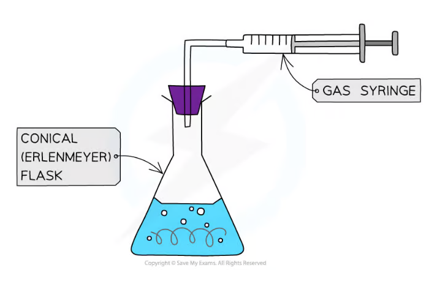
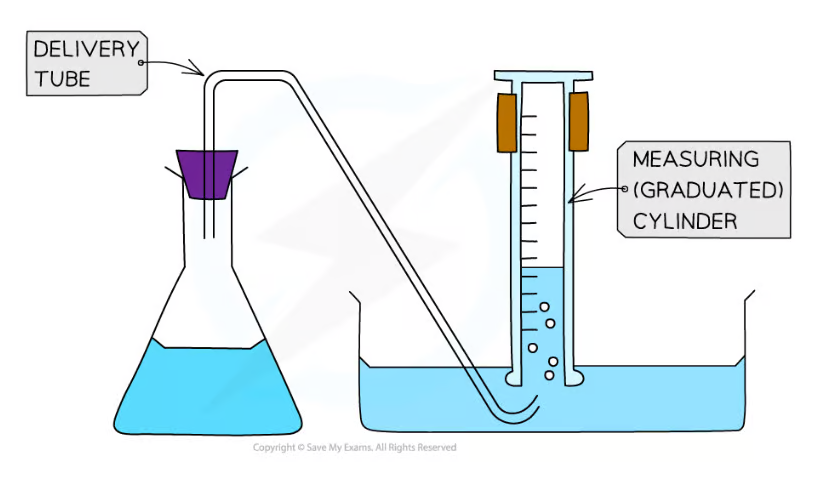
Method
- Weigh a known mass of sodium carbonate and transfer it to the flask。
- Add a measured volume of hydrochloric acid，fit the bung immediately and start collecting the gas。
- Record the final gas volume when no further gas is produced。
- Repeat using different masses of carbonate while keeping acid in excess。
- Record gas volume and mass in a results table。
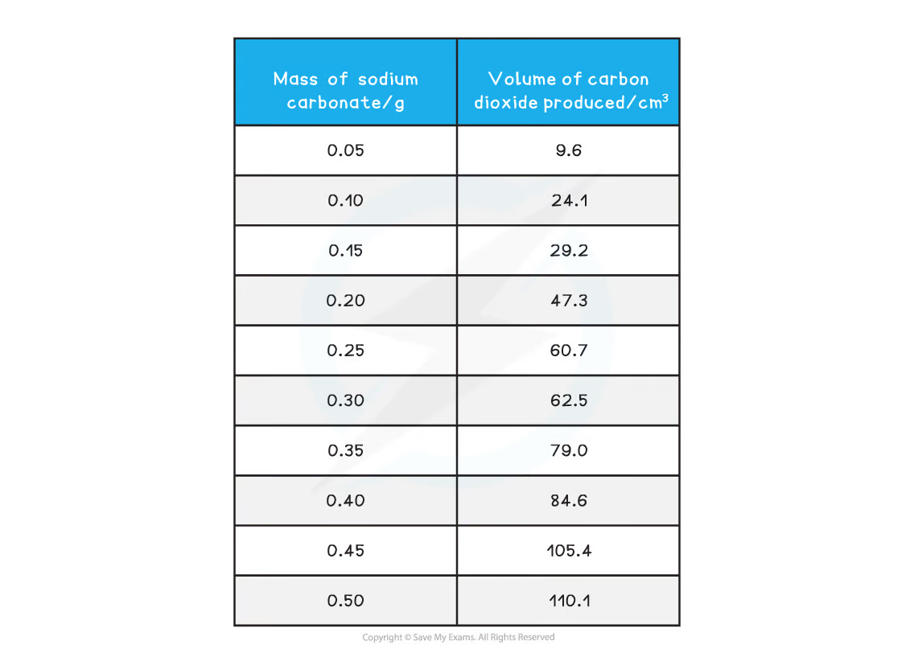
Calculation and graph
From the balanced equation：
\[ n(\ce{Na2CO3})=\frac{m}{M_r},\qquad n(\ce{CO2})=n(\ce{Na2CO3}) \]
The gradient of a graph of gas volume against moles of carbonate gives the molar gas volume. If volume is plotted against mass，use M_r to convert the gradient：
\[ V_m=\frac{V(\ce{CO2})}{n(\ce{CO2})} \]
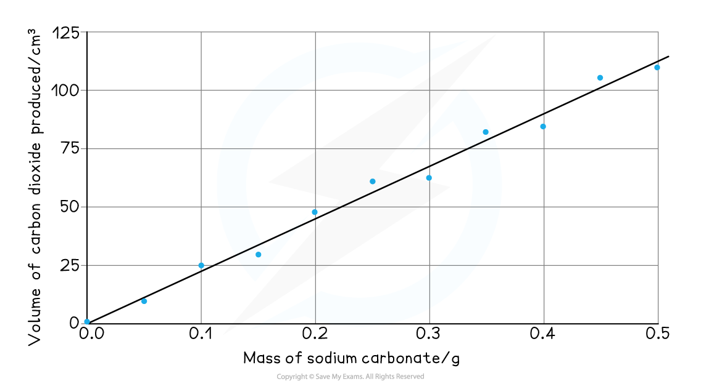
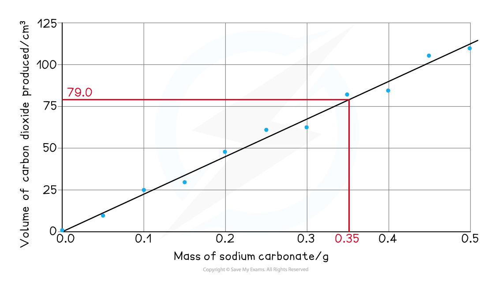
Evaluation
- use a bung and delivery tube that fit tightly to prevent gas leakage；
- allow the reaction to finish before reading the gas volume；
- remove the first portion of gas if it is air from the apparatus；
- ensure the carbonate is completely transferred and the acid is in excess；
- read the gas syringe at eye level and repeat each mass；
- gas dissolving in water and temperature / pressure differences explain deviations from the accepted molar volume。
3.1.2 Determining Enthalpy Change of Reaction
Core Practical 2
Use a simple calorimeter made from a polystyrene cup with a plastic lid. Measure the temperature change when two solutions react or when a solid dissolves。
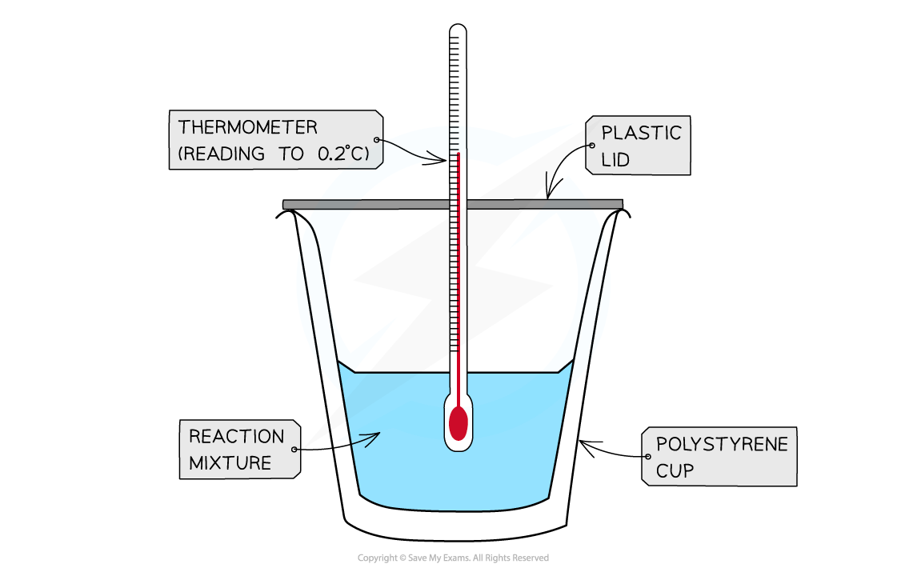
The heat transferred to the solution is calculated by：
\[ q=mc\Delta T \]
where m is the mass of solution in grams，c is the specific heat capacity，and ΔT is the temperature change in kelvin or degrees Celsius。

For an exothermic reaction，the solution warms and ΔH is negative：
\[ \Delta H=-\frac{q}{n} \]
where n is the moles of the limiting reagent or the moles specified by the reaction equation。
Method and cooling correction
- Measure equal or specified volumes of the reactants into the insulated cup。
- Record the initial temperature of both solutions。
- Mix rapidly，replace the lid and record temperature at regular time intervals。
- Continue recording during the cooling section。
- Extrapolate the cooling line back to the mixing time to estimate the maximum temperature that would have been reached without heat loss。
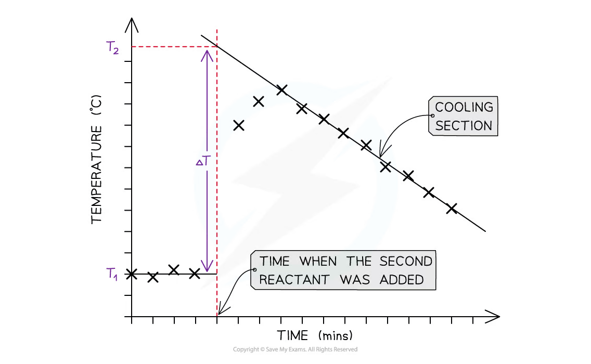
Evaluation
- use a lid and an insulating cup to reduce heat exchange；
- stir continuously so the temperature is uniform；
- use a thermometer with suitable resolution and wait for the reading to stabilise；
- measure the actual total mass / volume of solution；
- extrapolation reduces but does not remove heat-loss error；
- heat capacity of the cup、incomplete reaction and thermometer lag can affect
ΔH。
3.1.3 Determining Concentrations
Core Practical 3: hydrochloric-acid concentration
An acid-base titration can determine the concentration of hydrochloric acid using a solution of known concentration：
\[ \ce{HCl(aq) + NaOH(aq) -> NaCl(aq) + H2O(l)} \]
The stoichiometric ratio is 1:1. A measured volume of one solution is placed in a conical flask with a few drops of indicator；the other solution is delivered from a burette until the indicator just changes colour。
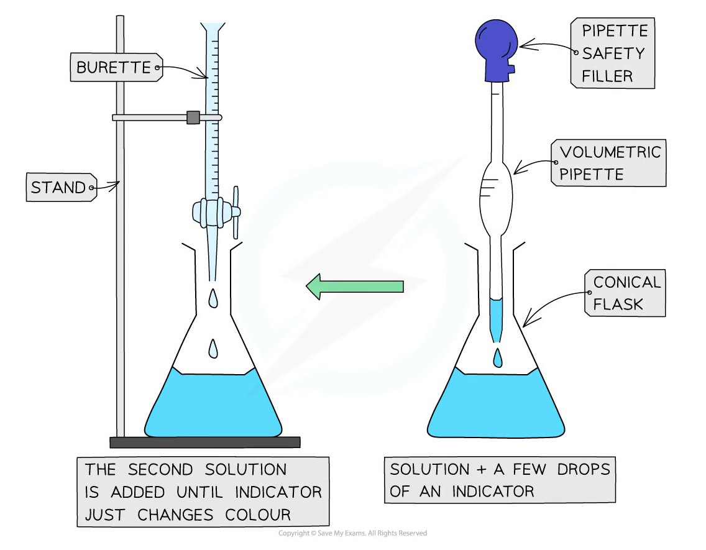
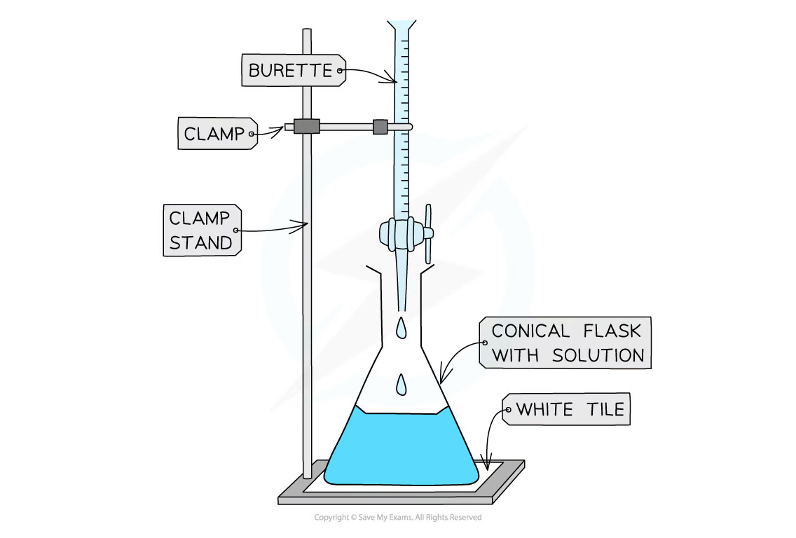
Procedure
- Rinse the burette with the solution that will be placed in it and record the initial reading。
- Rinse the pipette with the analyte，transfer a fixed volume to a conical flask and add indicator。
- Run the titrant into the flask while swirling continuously。
- Near the endpoint，add titrant dropwise and wash down the flask walls with distilled water。
- Record the final burette reading and calculate the delivered volume。
- Repeat until concordant titres are obtained。
Results and calculations
The burette reading should be recorded to the correct precision；the delivered volume has an uncertainty from both initial and final readings。
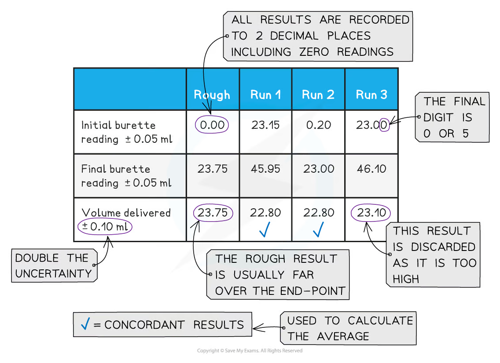
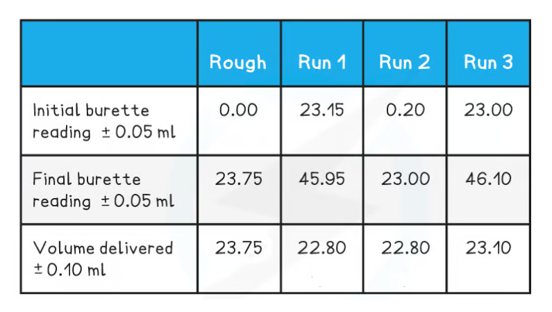
Use the mean of concordant titres，not the rough titre or an anomalous result：
\[ n(\ce{NaOH})=c(\ce{NaOH})V(\ce{NaOH}) \]
Then use the equation ratio to calculate n(HCl) and：
\[ c(\ce{HCl})=\frac{n(\ce{HCl})}{V(\ce{HCl})} \]
Evaluation
- use a white tile and a suitable indicator to identify the endpoint；
- read the bottom of the meniscus at eye level；
- remove the funnel before taking the initial burette reading；
- rinse the conical flask with distilled water，not analyte；
- use small additions near the endpoint；
- concordant results should agree within the required tolerance；
- overshooting the endpoint makes the titre too large and changes the calculated concentration。
3.1.4 Standard Solutions
Core Practical 4: preparing a standard solution
A standard solution has a accurately known concentration. It is prepared from a pure solid with known formula and molar mass。
\[ n=\frac{m}{M_r},\qquad c=\frac{n}{V} \]
The final volume V must be measured in a calibrated volumetric flask。
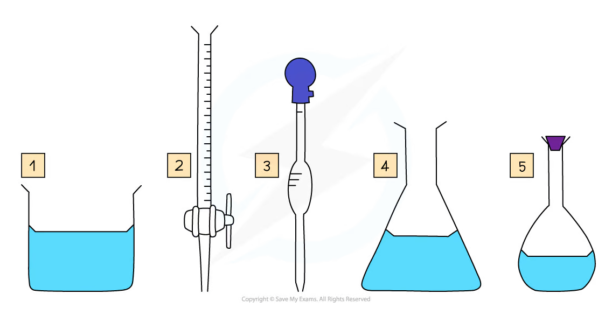
Method
- Accurately weigh the required mass of solid in a weighing boat。
- Transfer the solid to a beaker，rinse the weighing boat and dissolve the solid in a small volume of distilled water。
- Stir with a glass rod until completely dissolved。
- Transfer quantitatively to a volumetric flask using a funnel。
- Rinse the beaker，glass rod and funnel with distilled water，adding all washings to the flask。
- Make up to the calibration mark，using a dropping pipette near the mark。
- Stopper and invert the flask several times to mix thoroughly。
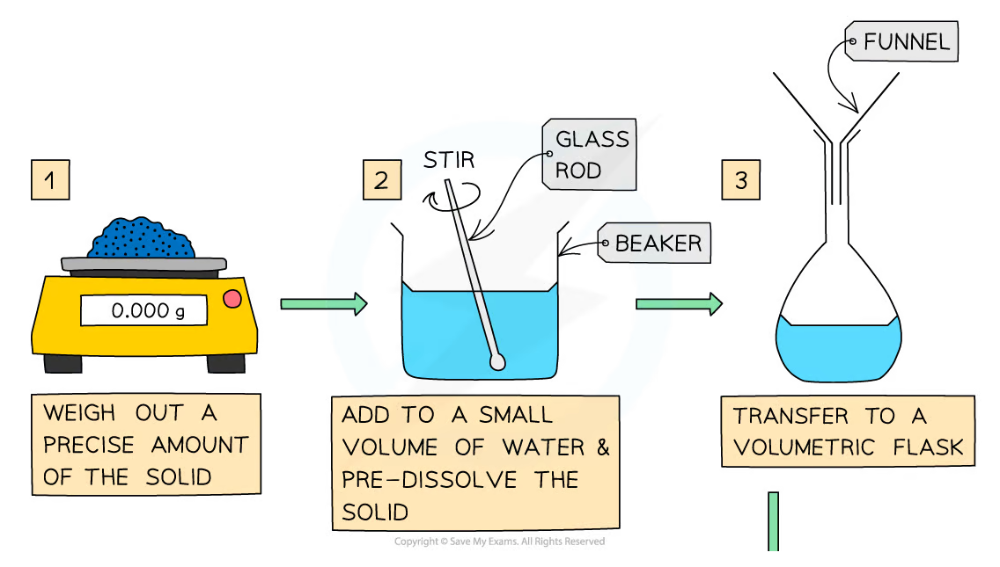
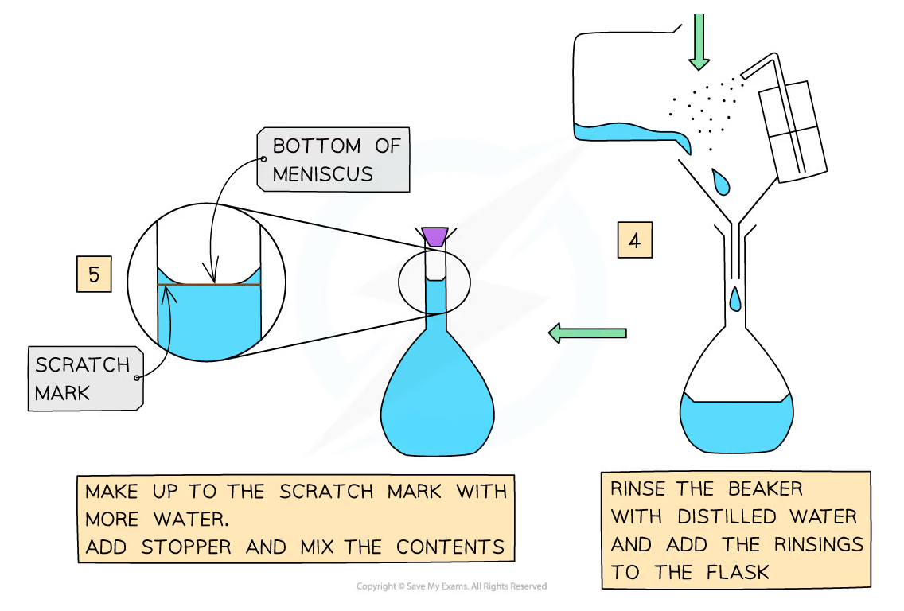
Common errors
- incomplete dissolution gives too few dissolved moles；
- loss during transfer lowers the concentration；
- filling above the calibration mark makes the volume too large；
- not mixing after making up the volume gives a non-uniform solution；
- a wet weighing boat or impure solid changes the calculated concentration；
- read the bottom of the meniscus at eye level and keep the flask on a level surface。
Data, uncertainty and safety
Practical-answer structure
Write apparatus、method、control variables、raw data、calculation、graph、conclusion and evaluation. Include units and appropriate significant figures. For graphs，label both axes，use a sensible scale，plot points accurately and draw a best-fit line。
Safety
Use eye protection and handle hydrochloric acid、sodium hydroxide and hot solutions carefully. Wear gloves where appropriate，tie back long hair，clean spills immediately and dispose of chemical waste according to laboratory instructions。
Exam checklist
Source note
本页面对应：Note per Chapter/Note per Chapter/3.1 Physical Chemistry Core Practicals.pdf.pdf。页面中的 apparatus、tables 和 graphs 均从该 PDF 的内嵌图像独立提取并保存到 assets/notes/physical-core-practicals/。